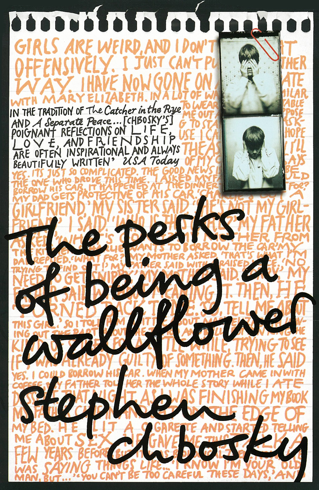

Summary
Based on the novel written by Stephen Chbosky, this is about 15-year-old Charlie (Logan Lerman), an endearing and naive outsider, coping with first love (Emma Watson), the suicide of his best friend, and his own mental illness while struggling to find a group of people with whom he belongs. The introvert freshman is taken under the wings of two seniors, Sam and Patrick, who welcome him to the real world.
Resumen
Basada en la novela escrita por Stephen Chbosky, se trata de 15 años de edad, Charlie (Logan Lerman), un extraño entrañable e ingenuo, hacer frente a la primer amor (Emma Watson), el suicidio de su mejor amigo, y su propia enfermedad mental mientras lucha por encontrar un grupo de personas con las que pertenece. El estudiante de primer año introvertido se toma bajo las alas de dos personas mayores, Sam y Patrick, que le dan la bienvenida al mundo real.
Released: October 12, 2012
Director: Stephen Chbosky
Actors:
- Emma Watson
- Logan Lerman
- Ezra Miller
Related Films: